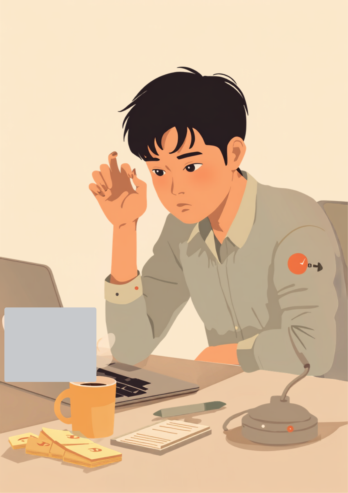
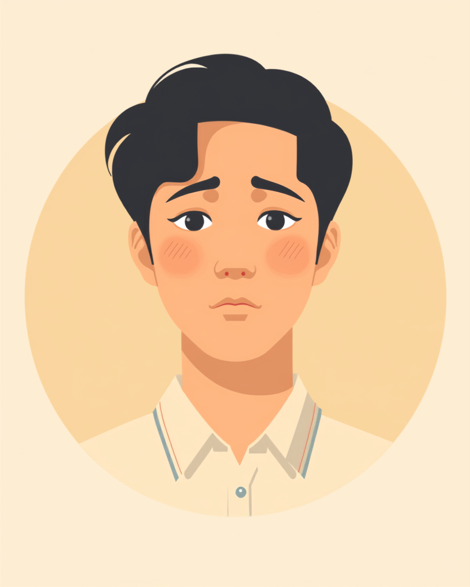

何度見直しても、送信ボタンが押せない
就労支援の現場で関わってきた中で、こんな声を聞いたことがあります。「メールを送る前に、宛先と添付ファイルと文面を、最低でも3回は見直さないと押せないんです」というものです。確認したい気持ちそのものは誰にでもあるものですが、それが「何度確認しても安心しきれない」というところまでいくと、業務の時間そのものを圧迫してしまうことがあるようです。
本人にとっては、頭では「もう十分確認した」と分かっていても、不安のほうが先に体を動かしてしまう感覚に近いのかもしれません。何度も同じ箇所を読み返してしまう、送信した後も内容が気になって仕方がないといった行動は、決して大げさな反応ではなく、その人なりに不安と付き合おうとしている結果でもあるようです。
「入社2年目なんですけど、メールの送信ボタンを押すのに毎回5分くらいかかるんです。宛先合ってるか、添付ファイル入ってるか、変な言い回しになってないか、3回くらい見直さないと押せなくて。この前なんて、送信して30秒後にまた文面が気になって、慌てて『先ほどのメールの訂正です』って追いメールしちゃって、逆に恥ずかしいことになりました。上司には『丁寧だね』って言われるんですけど、正直そんな余裕のある話じゃなくて、毎日メール10通で1時間近く溶けてる自覚はあります。3ヶ月前に心療内科に行ったら、確認行為が強く出るタイプかもしれないと言われて、なんか少し納得したというか、性格の問題じゃなかったんだ、と思いました。」

なぜ確認をやめられないのか、不安と確認の悪循環
強迫性障害の特性がある方の中には、「不安→確認→一時的な安心→再び不安」というサイクルを繰り返してしまうという経験をしている方がいるとされています。確認した直後は少し気持ちが落ち着いても、その安心は長く続かず、しばらくするとまた同じ不安が顔を出す。そしてまた確認する。この繰り返しの中で、不安の「基準」そのものが少しずつ底上げされてしまい、以前は1回で済んでいた確認が2回、3回と増えていくことがあるようです。
ここで大切なのは、このサイクルに気づくこと自体が、対処の第一歩になるという点です。「また同じパターンに入っているな」と自分で気づけるようになるだけでも、確認を重ねる前に立ち止まりやすくなる場合があるとされています。次の章では、職場という場面に絞った具体的な工夫を見ていきます。
「経理なんで数字の確認は仕事のうちなんですけど、それとは別に、家を出るときの戸締まりの確認がひどくて。鍵閉めたっけ、コンロ消したっけって、玄関出てから3回くらい戻る日もあります。半年前、電車に乗ってから『ガス、本当に消したかな』って気になって、次の駅で降りて引き返したことがあって、結局大丈夫だったんですけど、その日は1時間近く遅刻しました。上司には体調不良って言って誤魔化しましたけど、正直しんどかったです。今はスマホで写真を撮って『確認した証拠』を残すようにしてから、多少マシになりました。それでもゼロにはならないですけどね。」
職場でできる工夫、確認行為と付き合いながら働くために
確認回数をあらかじめ決めておく
不安になったときほど、「もう1回だけ」と際限なく確認を重ねやすくなります。「送信前は2回まで」「書類チェックは1回、気になったら5分後にもう1回」など、あらかじめ回数を決めておくことで、確認そのものを止めるのではなく「区切りをつける」練習になる場合があるとされています。
- 「確認は最大◯回まで、と自分の中でルールを決めておく」
- 「確認した内容をスマホで写真に残し、見返せるようにしておく」
- 「不安になったら、行動する前に一呼吸だけ置いてみる」
- 「一人で抱え込まず、決まった相談先をあらかじめ持っておく」
職場に伝えるなら、具体的な場面に絞って
症状の詳細をすべて説明する必要はありません。「特定の作業で確認に時間がかかりやすいこと」「ダブルチェックの仕組みがあると助かること」など、業務に関わる範囲に絞って伝える方法をとっている方もいるようです。すべてを一度に伝えようとせず、信頼できる一人に少しずつ共有していくところから始めても大丈夫です。2026年8月時点では、障害者差別解消法の改正により、企業が合理的配慮についてより丁寧に話し合うことが求められるようになっています。
使える制度と、一人で抱えないための相談先
精神障害者保健福祉手帳という選択肢
強迫性障害の診断がある場合、精神障害者保健福祉手帳の対象となることがあります。等級は症状の重さや日常生活・社会生活への影響によって異なるため、詳しくは主治医や自治体の障害福祉窓口に確認するのが確実です（2026年8月時点の情報です）。手帳を取得すると、障害者雇用枠での就職や、企業側の合理的配慮を前提にした働き方を選びやすくなる場合があります。
治療を続けながら働くという前提
認知行動療法や薬物療法などの治療を続けながら働いている方は多くいるとされています。通院の頻度や時間帯を勤務先にあらかじめ伝えておくことで、通院日を調整しやすくなる場合があるほか、産業医やEAP（従業員支援プログラム）を導入している職場であれば、そちらに相談できることもあります。
相談できる窓口
- 精神科・心療内科（診断や治療方針、働き方についての相談）
- カウンセリング（確認行為との付き合い方を継続的に練習する場として）
- 自治体の障害福祉窓口、精神障害者保健福祉手帳の相談窓口
- 就労移行支援事業所（職場での工夫を含めた就労準備や定着支援）
よくある質問
関連記事
この記事に、聞いてみたいことはありますか？
「自分の場合はどうなんだろう」と思ったことを、気軽に書いてみてください。いただいた質問は個別にお返事したうえで、匿名で記事にすることがあります。
mimemime代表。就労支援の現場経験をもとに、障がいのある方の働く不安に寄り添う記事を執筆。